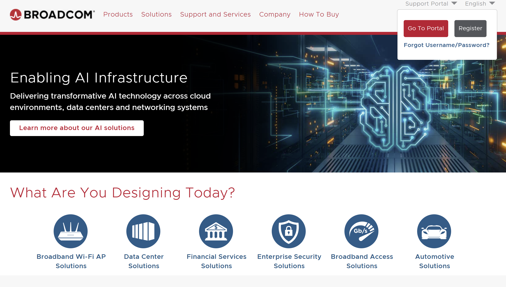
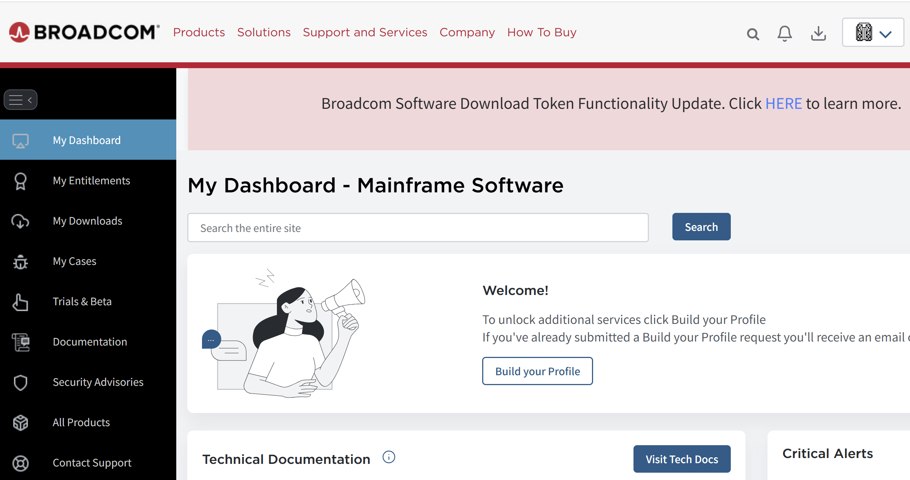
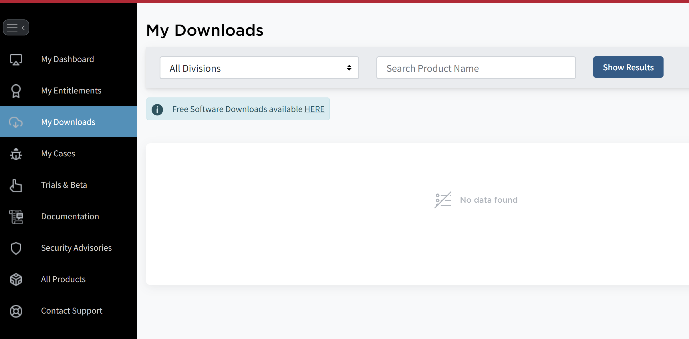
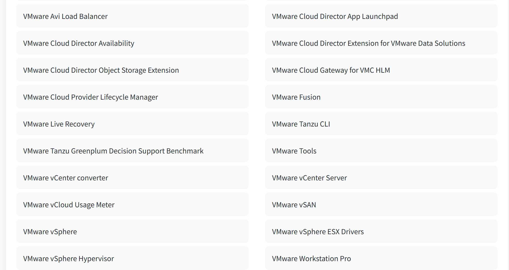
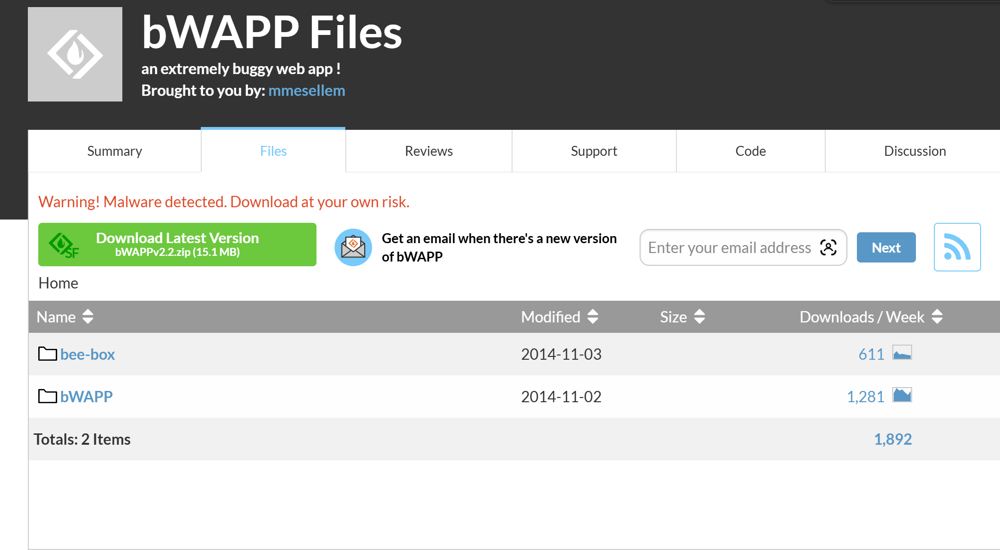
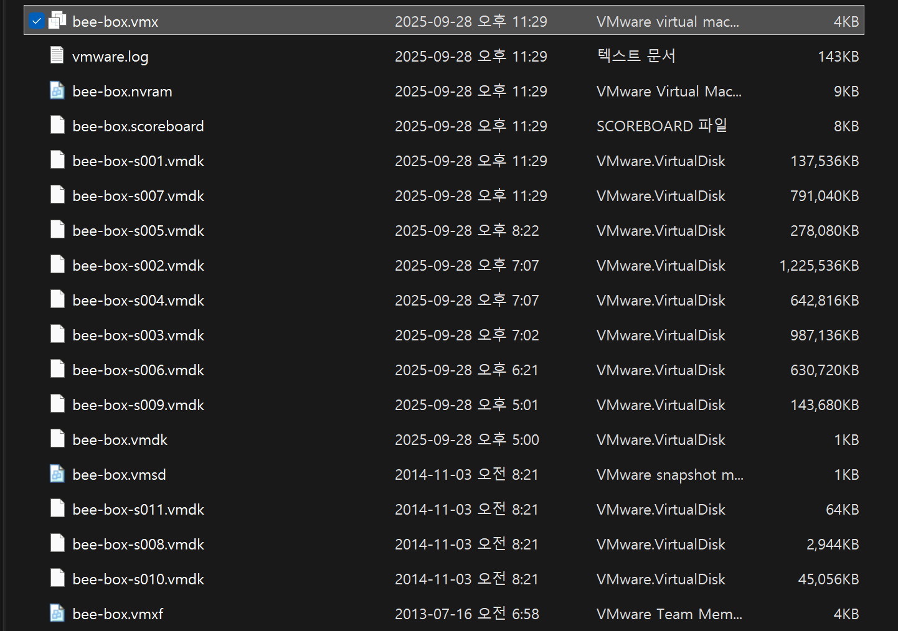
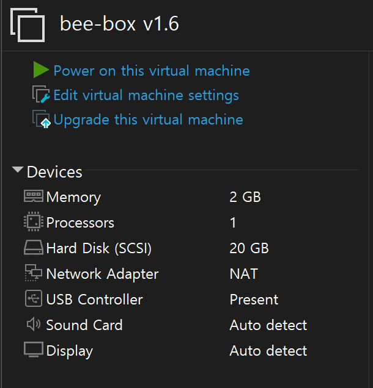
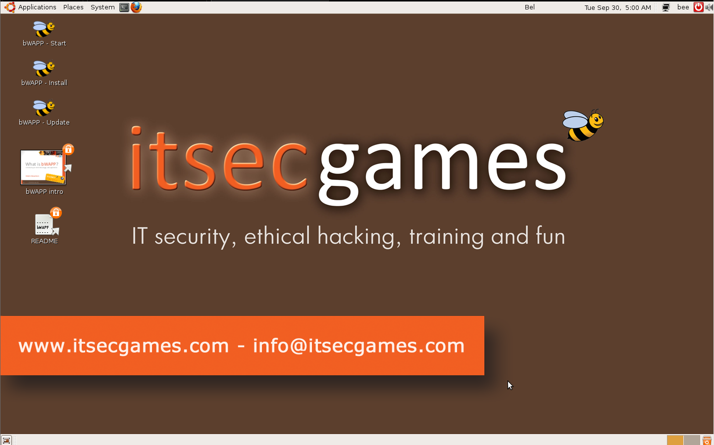
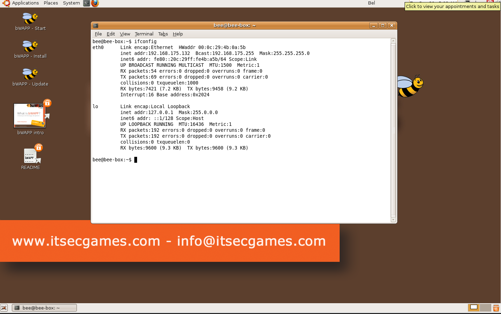
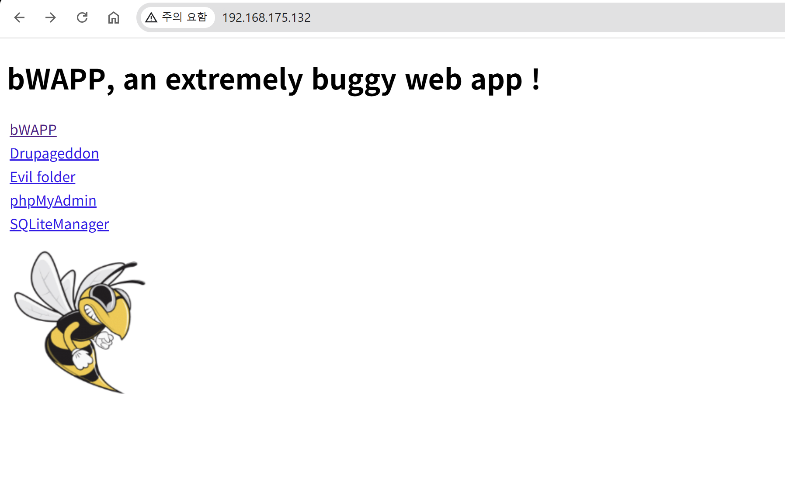

이번 주차에는 기초 웹 해킹 기법을 실습하는 시간을 가졌다.
실습은 bWAPP 를 사용하여 진행하였다.
이 글에서는 bWAPP 를 구축하는 방법에 대해 설명하고
다음 글에서 bWAPP 에서 실습한 기법들에 대해 말하도록 하겠다.
bWAPP
bWAPP 는 웹 애플리케이 보안 학습과 실습을 목적으로 설계된 오픈 소스 프로젝트이다.
나는 VMware 를 사용하여 구축을 진행하여
VMware 로 bWAPP 를 구축하는 방법에 대해서 말하도록 하겠다.
VMware 설치
bWAPP 를 설치하기 전에 VMware 를 설치하는 방법에 대해서 알려주도록 하겠다.
Broadcom 공식 사이트에 접속한다.
Broadcom Inc. | Connecting Everything
Broadcom Inc. is a global technology leader that designs, develops and supplies a broad range of semiconductor, enterprise software and security solutions.
www.broadcom.com

그런 다음 Support Portal 를 누르면 Go To Portal 과 Register 가 나온다.
VMware 를 사용하려면 회원가입이 필수이기 때문에 회원이 아니라면 Register 를 누르면 된다.
회원 가입을 했다면 Go To Portal 로 이동하면 된다.

그러면 이런 화면이 보일 것이다.
여기서 My Downloads 로 이동한다.

그 후 Free Software Downloads available Here 을 누르면

VMware Fusion 과 VMware Workstation Pro 가 보일 것이다.
Fusion 은 macOS 용, Workstation Pro 는 Windows OS 용이다.
bWAPP 구축
이제 VMware 도 있으니 bWAPP 를 구축하면 된다.
https://sourceforge.net/projects/bwapp/files/
bWAPP - Browse Files at SourceForge.net
The All-in-One Commerce Platform for Businesses - Shopify Shopify offers plans for anyone that wants to sell products online and build an ecommerce store, small to mid-sized businesses as well as enterprise
sourceforge.net

다음 사이트를 들어가서 bee-box 를 받으면 된다.
그 후 압축을 풀고 bee-box.vmx VMware 로 열면 구축이 끝난 것이다.

추가로, VMware 설정에서 메모리를 2 GB, 네트워크 어댑터를 NAT 로 설정하면 된다.

bWAPP 크롬으로 실행
구축을 하였으니 앞으로 VMware 로 bWAPP 를 실행할 수 있다.
하지만 가상 머신을 사용하는 것이 웹 페이지에서 실행하는 것 보다 불편할 수 있다.
그래서 bWAPP 를 크롬에서 접속하는 방법에 대해서 말하도록 하겠다.
먼저 VMware 로 bWAPP 를 실행한다.

여기서 왼쪽 상단에 박스 모양이 보일 것이다.
이 박스를 눌러서 터미널을 열 수 있다.
터미널을 연 다음, 명령어로 ifconfig 를 입력하여 주소를 확인해야 한다.

이 모습이 ifconfig 를 입력한 모습이다.
eth0 에 있는 inet addr 뒤에 있는 ip 주소가 나의 주소이다.
나의 경우, ip 주소가 192.168.175.132 이다.
이 주소를 크롬에서 입력하면 bWAPP 를 크롬에서도 실행할 수 있다.

이제 bWAPP 를 눌러 로그인 후 실습을 진행하면 된다.
※ 아이디/패스워드 : bee/bug
후기
bWAPP 에 어떤 취약점이 있는지 살펴보았는데
단순히 많은 취약점을 모은 것이 아니라
하나의 취약점을 세분화하여 여러 단계로 구성된 프로젝트였다.
이렇게 세분화한 것 덕분에 하나의 취약점을 여러 방면으로 활용할 수 있겠다는 생각이 든다.
또한 이 블로그에서는 설명하지 않았지만 bWAPP 외에 DVWA 같이 취약점을 실습할 수 있는 프로젝트가 많다.
취약점 공부를 하고 싶다면 bWAPP 말고도 다른 것도 알아보는 것을 추천한다.